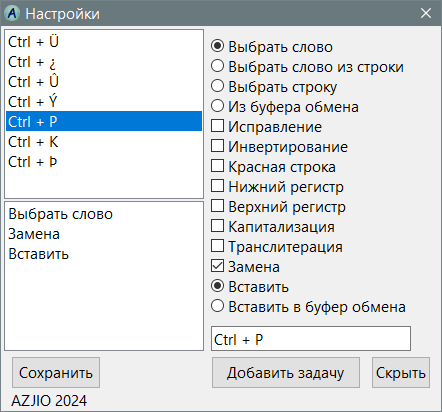

TextCorrection
Назначение
Исправляет текст набранный в неверной раскладке клавиатуры.

Взаимосвязанные
TextCorrection (AutoIt3) рекомендуется
TextCorrection (Linux)
Описание
На данный момент эта версия написанная на языке PureBasic переписанная с AutoIt3. Эта версия не проверена временем и доведена до 95% от функционала AutoIt3, а конкретно не имеет функциональности определить класс окна, чтобы копировать не вызовом горячей клавиши, а вызовом команды копирования. Но у AutoIt3 этот функционал тоже появился не сразу, а буквально недавно будучи после десятилетия использования.
Отличия этой версии:
PureBasic как язык программирования - компилируемый в отличии от AutoIt3.
Есть опция отмены слежения за раскладкой клавиатуры.
Настройка задачи позволяет задать разные способы захвата слова/строки (см. скриншот)